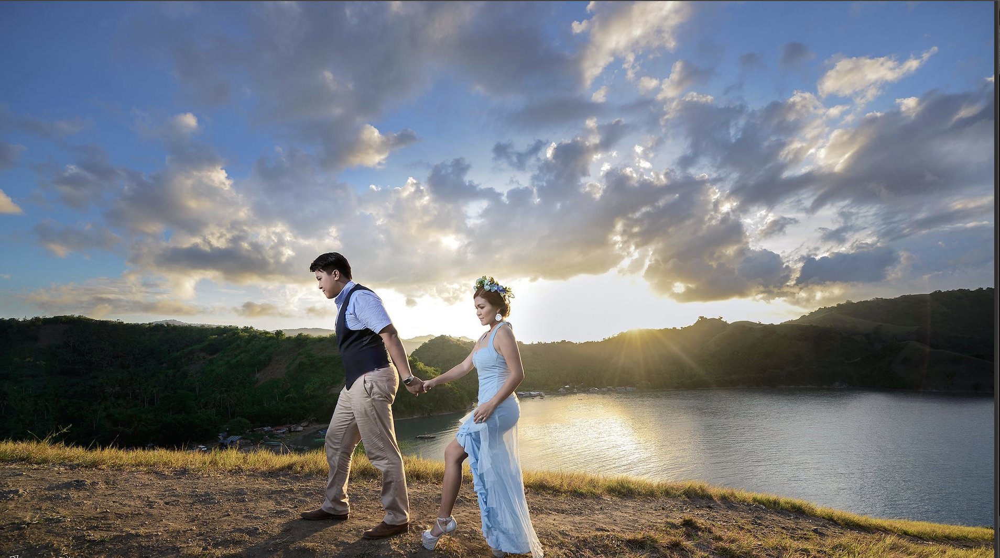

Orchestrating Atmospheres
for Life's Grandest Moments.

THE ART OF THE CELEBRATION
We believe that a true milestone is not merely scheduled; it is meticulously composed. Based in Davao, Studio Erish seamlessly integrates rigorous logistical precision with an uncompromising eye for contemporary, luxury design.
Commission Our Studio →